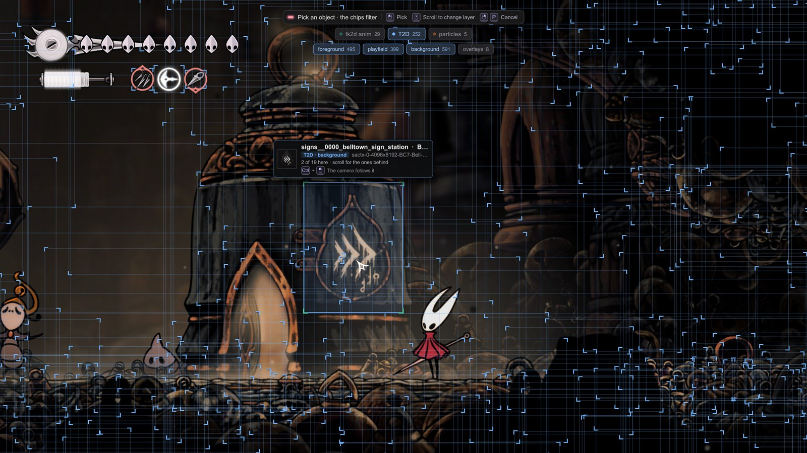
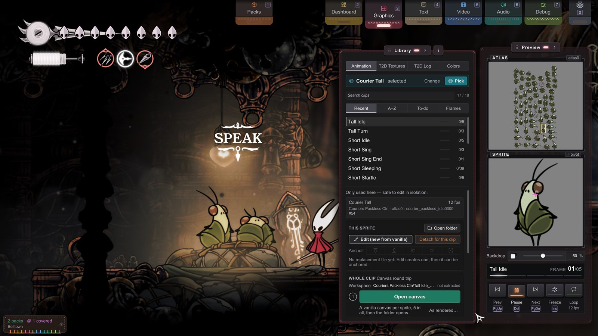
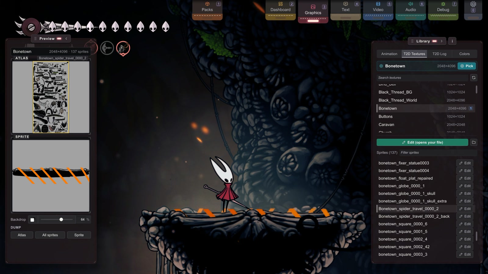

B2 Finding Any Sprite
Sprites · for creators.
How do I find the name of the thing I want to replace?
You never guess: Graphics reads the real name off the game.
You'll be able to: find the exact collection / material / sprite names for any on-screen art, tell which of the two sprite systems it belongs to, and surface assets that haven't loaded yet.
Before you start: B1, so the dump-and-edit loop is familiar. This page is the same loop, generalized to anything, not just Hornet's idle.
Path is identity — and the path comes from the game
A replacement applies when its file path matches the asset's identity: Sprites/. You do not choose these three names: they are the game's internal names. With one wrong letter, Stitchwork does not find the file. So the whole skill is reading the real names off the game, and Graphics does exactly that, live.
Two browsers, because there are two sprite systems
Graphics has one browser per rendering pipeline (How Stitchwork Works covers why there are two). Choose it in the mode row at the top of the Library panel:
- Animation — tk2d. Almost every animated character, enemy, and boss.
- T2D Textures — Texture2D. Plain textures and UI: menus, HUD, effects, some ability and cinematic art. This includes T2D art that Unity's own Animator plays frame by frame.
Not sure which a sprite is? Check both. The one that surfaces it is the one that owns it — that single check resolves most "why won't this apply" cases.
Point at it — World Pick
Press P anywhere in the game, with a panel open or not, and pick mode starts. Press P again to cancel. To change the key, open Settings (0) › Keys and find World pick. You can also start it from Graphics (3, or the Graphics pull tab at the top edge of the screen). While nothing is chosen, the Library panel's big button is Pick object in world (Animation mode) or Pick texture in world (T2D Textures mode). After a choice, the small Pick in the picked row does the same. Pick mode hides the panels, the pull tabs, the Packs panel and the Settings window until the pick ends. Packs keeps your changes that are not applied. The live game becomes the browser:
- Each object in a category that is on gets a thin selection box, color-coded by kind — teal for tk2d (animated and static alike, HUD chrome included), blue for T2D, orange for particle systems, violet for meshes. The scene reads like an annotated blueprint.
- Filter chips at the top of the screen toggle those categories: "tk2d anim", "T2D", "particles" and "meshes". Each chip shows a count. Where you enter from sets the chips: from Animation, only "tk2d anim" is on; from T2D Textures, only "T2D"; with
P, both. Particles and meshes are always off when you enter. Turn a chip on when you want it. A scene holds far more particle renderers than anything else, so leaving them on hides the object you are looking for. While "T2D" is on, a second chip row filters world art by depth band — foreground / playfield / background — which is the fast way to isolate a backdrop from the layers stacked in front of it. Full-screen covers, such as vignettes and fog sheets, draw no box and are never the automatic pick. They come last when you scroll the wheel at a spot, so you reach them without a chip. - Aiming: the pick prefers the smallest box under your cursor (the most specific thing); aim at a big image's center to grab it deliberately; scroll the wheel to cycle through overlapping candidates. Thin art, such as a rope or a chain, gets a hit area at least 8 pixels wide, so you can still click it. The pick card beside the object shows a preview, the name, a category chip and the raw name. For T2D, the chip adds the depth band, for example "T2D · background". When boxes overlap, it says "2 of 5 here · scroll for the ones behind". For a target as tall as the screen, such as a backdrop, the card follows the pointer. A hint pill at the top of the screen repeats the controls: a click picks, "Scroll to change layer", and a right click or
Pcancels.

What a click opens
A click lands you in the right place:
| Pick | What opens |
|---|---|
| Animated tk2d | The Animation mode on the object's clips, with its current clip in view. |
| T2D or UI | T2D Textures, with the entry and the sprite selected. |
| Static tk2d (HUD chrome such as the silk orb's frame, props with no animator) | The sprite file for editing, ready for hot reload. The pick skips the lists. |
| Particle system | The pick selects the SYSTEM: T2D Textures opens the texture of the particle material. If that texture has no sprites, Edit (new from vanilla) writes the whole texture to Spritesheets/ and opens it. |
| Mesh | The mesh's texture in T2D Textures, as for a particle pick. Plain mesh renderers draw this art: hanging cloth, drapes, ropes and chains; domed shrine art, such as the craw bell on the Bellhome in Bellhart, the Weaver shrine heads and the diving bell; and grass. |
| Mist, webs, updrafts, rain and glitter (scrolling art behind a mask) | The scrolling texture, for example web_mist_tiled or dust_mist_texture_solid, not the white mask sprite. |
| Nothing | The hint shows "No pickable object there". |
| A pick that T2D Textures cannot find | The message "… is not in this scene's list. Pause the game while the effect is alive, then pick." |
A right click (or any Stitchwork hotkey) cancels; Esc belongs to the game's pause menu.
Ctrl+click makes the camera follow the object instead of picking it. Pick mode stays open, so you can Ctrl+click another target. A CAMERA plate at the top right has Release, which gives the camera back to Hornet.
A particle pick needs live particles on screen (an idle emitter has nothing to aim at), and fast burst effects are hard to click in real time. The recommended workflow: freeze time with a companion mod's global timescale pause (companion mods) while the effect is mid-air, then pick at leisure.
tk2d — the Animation mode
- Animation. The Library lists each object the game has animated since the scene loaded, by its GameObject name — Hornet is
Hero_Hornet(Clone), pinned to the top. Static tk2d objects are never in this list: World Pick them instead. - Click one → the Library moves to its clips. Click a clip: the object plays it, paused at its first frame.
- Choose a frame on the Preview panel's frame strip, or with Prev / Next → the console's identity card names the three things you need in one line: Collection › Material (the atlas) › Sprite.
- Edit (new from vanilla), in the console's This sprite group, dumps that frame, copies it into your working folder, and opens it — your starting canvas. Ready N sprites for edit, in Whole clip, does the whole clip at once (distinct sprites only). The Animation Mode tours every control.
The names are read, not remembered. The identity card is always right for your build; a name from a guide is right only until the next patch (B1 has the
Knightexample; the Chinese glossary collects the worst aliases).

Texture2D — the T2D Textures mode
- T2D Textures. The Library lists the T2D textures in memory, with Search textures above the list. Each row shows the name and the size. Standalone textures (not part of a packed atlas) come last, under a "Standalone" caption.
- Click a texture → its sprites list under it, as "Sprites (n)" with Filter sprites. The Preview panel shows the readout (
W×H · n sprites), the Atlas view with a box on the selected sprite, and the Sprite view. - A row with a green S chip has a whole-sheet replacement loaded (tooltip "Spritesheet override"); a blue number chip counts the individual sprites replaced (tooltip "Loaded individual sprites"). Either way, that's your pack hitting its target — a quick way to confirm a file is landing.
- To edit, select a sprite and click Edit (new from vanilla) above the sprite list, or the small Edit on its row. Stitchwork writes the vanilla sprite to
Sprites/in your working folder (a standalone texture goes toT2D/ <atlas>/ <sprite>.png Sprites/T2D/_standalone/) and opens it, ready to paint. Once the file exists, the button reads Edit (opens your file). - In the Preview panel, under Dump: Atlas (the whole sheet), All sprites, and Sprite (just the selected one — the usual follow-up to a world pick). These write vanilla reference to
Dumps/only. A status line reports the result. A dump never overwrites a file: a second Atlas or Sprite says "… is already dumped. No file written." All sprites says when it found no new sprite to dump.
Seeing transparent art clearly: the Preview panel has a Backdrop row under the views, shared by both modes. The swap button flips between a dark and a light backdrop; the slider sets its strength. Bright art reads on dark; dark or glow-heavy art reads on light.
Clean names. T2D Textures shows the clean name of an atlas (Hornet, not the raw sactx-0-2048x2048-BC7-Hornet-abc123), and that is what goes in your path (B4 › Clean names).

"What just fired?" — the T2D Log
T2D Log is the third mode in the Library's mode row. Its header reads "T2D trigger log", with Clear. Where T2D Textures shows everything currently in memory, the log shows what the game has referenced — so a transient effect (a lightning flash, an attack VFX, a dream sequence) appears the moment it plays. It records only while the Library shows T2D Textures or T2D Log, one row per atlas. The 20 newest rows stay. Each older row fades out over 8 seconds.
Trigger the thing. Read its atlas off the log. Click the entry to jump to it in T2D Textures. It's the fastest way to catch art that only exists for a few frames.
You can't find what isn't loaded
The browsers show what's in memory right now. A boss you haven't reached, an area you haven't entered, an item you haven't picked up — its art simply isn't there yet, and no amount of searching will surface it. The fix is physical: walk to it. Enter the area, start the fight, open the menu — then look.
To grab everything at once, there's a full-game dump — Utilities (7, or the Utilities pull tab) → the Dumping panel → Full dump. It takes two clicks: the first one arms it ("Click to start"), because it walks every scene in the game and ends your play session. The button stays off until Sprites on scene load is on: the full dump is that dump, driven through every scene. A plate at the bottom center shows the scene count ("SCENE n/N") and the minutes. Hold Backspace to cancel; the dump keeps its progress. Long per-scene stalls are normal.
Load a save first: on the title screen, the button stays off. The dump never writes your save: from its start to the title screen, Stitchwork blocks every save, autosave and achievement. Run it once, early — the dumping reference has the details, including the guarantee that dumps are vanilla ground truth even while packs are active.
Same name, two atlases
Occasionally a T2D clean name covers more than one atlas page (two Hornet pages, say). T2D Textures tells them apart with a suffix — Hornet-0, Hornet-1 — but your path still uses the plain clean name. Per-sprite files (Sprites/) need nothing more: a sprite only goes to a page that has it. A whole-atlas file named just Hornet.png can't tell two pages of the same size apart; to aim at one page, keep the page number in the file name, in the raw sactx-1-… form (T2D Sprites).
The tk2d cousin of this problem — two collections sharing one name — is path #5 in the Sprite Paths Reference.
Quick gotchas
- "I can't find sprite X." Most often, X is not loaded in this scene. Go where it appears, then look again.
- "The name is
sactx-0-…gibberish." That's the raw atlas name — use the clean version that T2D Textures shows. - "I dumped it and it's blank." That slot is empty in the source atlas (the game ships some empty). You want a sibling sprite, not that one.
- A name ends in
Cln(Conductor Cln,Tools Cln,Dock Flyer Cln). That's just the game's tag for clean / final assets — nothing special, copy it into your path verbatim, suffix and all. Dumps/is output only — Stitchwork never loads from it. To make an edited frame apply, copy it intoSprites/(or your pack). The per-sprite Edit button already does that for you. Files that a full dump leaves inDumps/just sit there until you move them.- The Overview counts line ("tk2d sprites: … · T2D: … loaded · Sheets: …") counts your replacements that are applied. It does not count the game art in memory.
- DebugMod's panels are open. Stitchwork then cancels pick mode, closes its own panels, and its keys open nothing (a message says so); hide DebugMod's panels with its toggle key, then pick again.
Next
- Replacements that outgrow the original → Bigger Art: Anchors
- The full path rules → Pack Folder Structure